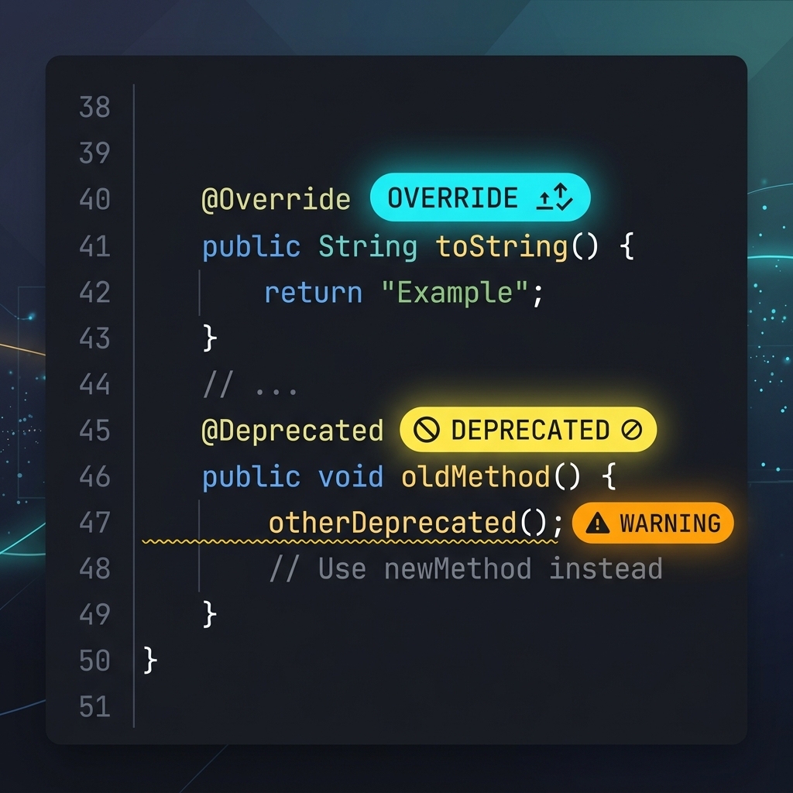

In Java, annotations are a type of metadata—extra notes or tags you attach to classes, interfaces, methods, or variables. These tags do not change the core logic of your program directly, but they instruct the compiler or JVM to perform checks or handle classes differently.
In this guide, we will cover the three most common built-in annotations in Java: @Override, @Deprecated, and @SuppressWarnings using clear code examples.

Imagine writing a manuscript and leaving sticky notes for your editor:
@Override: A note saying: "This replaces chapter 2." If chapter 2 doesn't exist, the editor stops you and says: "Wait, there's nothing to replace!"@Deprecated: A label on a paragraph saying: "This section is outdated. Use the newer edition instead." It still reads fine, but warns the editor not to copy it over next time.@SuppressWarnings: A label saying: "Ignore the formatting warnings in this section, I did it intentionally."
1. Guaranteeing Subclass Overrides with @Override
The @Override annotation ensures that a subclass method successfully overrides a parent class method. It is your safety net against spelling typos.
class Animal {
void eatSomething() {
System.out.println("eating something");
}
}
class Dog extends Animal {
@Override
void eatSomething() { // Ensures exact match with parent class method
System.out.println("eating foods");
}
}If you accidentally type eatSomthing() (misspelled), the compiler catches it immediately because of the @Override tag and prevents build success until it's fixed.
2. Marking Obsolete Code with @Deprecated
When an API becomes old or unsafe, you shouldn't delete it instantly because other modules might depend on it. Instead, mark it as deprecated to warn future developers.
class A {
void m() {
System.out.println("hello m");
}
@Deprecated
void n() { // Outdated method
System.out.println("hello n");
}
}
public class Deprecated_Example {
public static void main(String args[]) {
A a = new A();
a.n(); // The compiler outputs a deprecation warning here!
}
}3. Silencing Compiler Warnings with @SuppressWarnings
Sometimes you write legacy code or perform operations that trigger compiler warnings (e.g. unchecked generic types). If you are confident your code is safe, use @SuppressWarnings to silence warnings.
public class Suppress_Warnings {
@SuppressWarnings("unchecked")
public static void main(String args[]) {
ArrayList list = new ArrayList(); // Legacy non-generic list
list.add("sonoo");
list.add("vimal");
for (Object obj : list)
System.out.println(obj);
}
}Without the @SuppressWarnings("unchecked") annotation, the compiler would output a warning indicating list additions are unsafe because types aren't declared. The annotation silences this warning.
Conclusion
Built-in annotations are tools that help Java developers communicate metadata to the compiler and team members. They serve to protect against spelling errors, flag outdated methods, and clean up build log output.